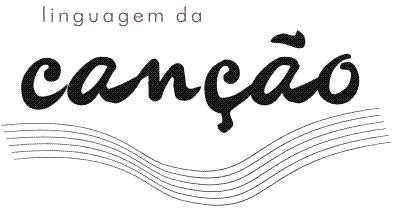

O
Programa de Pós-Graduação em
Semiótica e Lingüística Geral
e
o Grupo
de Estudos Semióticos FFLCH-USP
convidam
para o simpósio nacional

l i n g
u a g e m d a c a n ç ã o
2 0 0 8
Semioticistas,
historiadores, lingüistas, musicólogos,
críticos literários,
antropólogos, educadores confrontarão, em
três
jornadas, seus pontos de vista sobre as múltiplas facetas da
canção. Os gêneros, as
relações entre
compositores, arranjadores e intérpretes, as
características da interação
letra-melodia, a
centralidade da entoação, a
evolução dos
ritmos, a constituição da
tradição na MPB,
a ritualização encantatória, os
cancionistas de
diferentes regiões do país, o impacto do rap, a
história do samba, estarão entre as
questões
debatidas por estudiosos provenientes de diversos Estados do
país. Cinqüenta anos após o
surgimento
da Bossa Nova, a
canção, sob todas as suas formas de manifestação, não
pára
de agitar a cena cultural e de se transformar.
Segunda, terça e quarta-feira
24, 25 e 26 de março de 2008
Das 14 às 19 horas
Prédio de
Ciências Sociais FFLCH-USP, sala 08
Av.
Prof. Luciano Gualberto, 315 - Cidade Universitária
Clique
aqui
para ver o mapa
Clique abaixo para conhecer a
Vagas
limitadas!
Inscrições
Todas as vagas foram preenchidas e as
inscrições estão encerradas.
Clique
aqui
para ver as fotos do encontro
Comitê
Científico
Profs. Drs. Luiz Tatit, Waldir Beividas e Ivã Carlos Lopes
(DL-FFLCH-USP)
Comissão
Organizadora
Carolina Lindenberg Lemos - Ivã Carlos Lopes
- Waldir Beividas - Lucas Takeo Shimoda
Camila dos Santos Ribeiro -
Dayane Celestino de Almeida - Bruna Paola Zerbinatti
Logo e Projeto Gráfico
Lucas Takeo Shimoda
[contato]